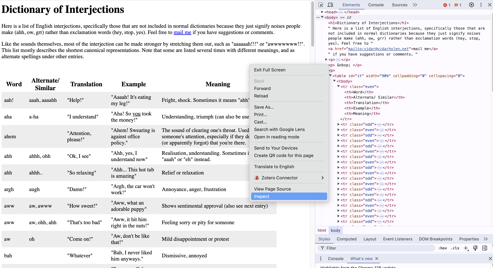

Chapter 4 Tutorials
4.3 Regular expressions in R
Like Zach, I’m not good at Regex so I’m just going to add examples that I previously used in my projects. See this cheatsheet or this cheatsheet for some useful guidance I wish I knew.
4.3.1 Punctuations
Let’s filter for titles that contain any type of punctuation. This code gives 5 titles with punctuation:
psych_df %>%
mutate(
punct = str_detect(title, regex("[:punct:]+"))
) %>%
filter(punct == TRUE) %>%
select(title) %>%
head(5)## title
## 1 [USA] Read this if you are interested in a career in mental healthcare
## 2 [May 2024] Post Study Participation Requests Here (Link/Text posts on their own will be removed) - Monthly Megathread
## 3 What are some decent paying jobs you can do with a bachelors in psychology?
## 4 Any Organisational Psychlogist here?
## 5 can i be a psychiatric nurse practitioner and get a PhD?The “+” after [:punct:] will match punctuation at least once, so multiple punctuation in a row will be detected too e.g. “I….want to score well in DAPR3”
This code gives titles without any punctuation:
psych_df %>%
mutate(
punct = str_detect(title, regex("[:punct:]+"))
) %>%
filter(punct == FALSE) %>%
select(title) %>%
head(5)## title
## 1 Borderline Personality Disorder Research
## 2 Studying psych in EU but working in Australia
## 3 Letters of Recommendation for grad school
## 4 I regret not choosing Psychology
## 5 I just failed BLEPP 2024 and now am lostWe can also use regex to separate strings into smaller ones by punctuation of any sort.
basic_string <- "I, kinda really - want to \ do well in BIG! Data! WOOO"
str_split(basic_string, regex("[:punct:]+")) %>%
as.data.frame(col.names = "words") %>%
mutate(
words = str_trim(words, side = "both")
)## words
## 1 I
## 2 kinda really
## 3 want to do well in BIG
## 4 Data
## 5 WOOOstr_trim gets rid of white space to the left, right, or both sides of the string.
4.3.2 Fully capitalised words
Now lets try to count the number of fully capitalised words in a title. I staggered the counts to see what each part of the regex does.
psych_df %>%
mutate(
fullycapitalised1 = str_count(title, regex("[A-Z]")),
fullycapitalised2 = str_count(title, regex("[A-Z]{2,}")),
fullycapitalised3 = str_count(title, regex("\\b[A-Z]{2,}\\b"))
) %>%
arrange(desc(fullycapitalised3)) %>%
select(title, fullycapitalised1, fullycapitalised2, fullycapitalised3) %>%
head(5)## title fullycapitalised1 fullycapitalised2 fullycapitalised3
## 1 UBC or SFU: MEd Counselling Psychology 10 3 2
## 2 Is working as an RBT a smart move if I want to get a Masters in ABA? 9 2 2
## 3 [USA] MSW or PsyD for grad school? 8 2 2
## 4 [USA]: MA in Clinical Psychology program at Northwestern - thoughts? 8 2 2
## 5 UK psychology student doing year abroad in USA 5 2 2- The first regex code counts the number of upper case letters in the title. So for the first title there are U, B, C… 10 capital letters.
- The second regex code captures words with two or more consecutive capitalised letters.
- The third regex code adds white space (empty string) before and after the capture word so that words like “MEd” or “MSc” don’t get counted.
4.3.3 Negated words
psych_df %>%
mutate(
n_negations = str_count(body, regex("n't"))
) %>%
select(body, n_negations) %>%
filter(n_negations == 2)## body
## 1 **(Myanmar)**\n\nHi, so I just finished my IGCSE and I'm looking to either attend **high schoo**l or **IB.** Here's the problem... I don't know where to go. My parents are thinking about sending me to Malaysia to do **ADTP** at **Sunway** or **INTI**. Originally, they were planning on sending me to **CATS Boston**, but it turns out that the boarding fees alone exceed half of our budget ( **\\~30 000** ), I did manage to snag a scholarship of 60 per cent, which brought the total -including tuition fees- to **\\~50 000**. Of course, it's still too much for us to handle. Now, I don't know what to do. \n\nPlease note that I have tried to research schools myself, but to no avail. Knowing my educational standard, I doubt I'd be able to get into Stanford with just my **IGCSE** results alone. I am planning on majoring in psychology, possibly as far as getting a doctorate. \n\n1. A good environment to learn and socialise\n2. We have a budget of **40K to 50K**, any lower is better\n3. Opportunity to study at a prestigious university after finishing **high school** or **IB** ( maybe like Stanford?? )\n4. **An opportunity for scholar too?**\n\n**Any suggestions?**
## 2 I am about to start my first term at a Uni for graduate school.\n\n \nThis University is a logistical nightmare, I have had every possible issue, and I have felt like I have been pulling my hair out all summer. The fact that some Alumni have even told me that this is normal is validating and disheartening. \n\n \nMy current issue is I am missing something for medical clearance that I was not told about until last Friday. Got it done and it will take a week at minimum to get the report back, which is when classes start. I have to be medically cleared to attend said classes, when I reached out asking if I will be-their response was "Okay, thanks"\n\nMy brother in Christ, will you temporarily approve me until my report comes in? Do I need to drop my classes? Like that is literally next week. You should also have a note about students who have had the utter joy of having chicken pox TWICE and needing to prove immunity. \n\nAsked my advisor and haven't heard back. Other side/issue, I started a new job in the public school system and realized that graduate school has a very strict schedule. Only one time slot available, which is fine until it's a 4pm class and students don't get out until 3:46. (which is currently my issue and my advisor told me to just make an accommodation with my prof)\n\n \nSO, do I just give up and try an online University to accommodate my schedule. Do I keep fighting and hope for the best, and prepare for even more logistical issues? I was told it does not end and that I will LOVE the classes, but absolutely hate everything else. Not very convincing to stay around when it feels like the universe is screaming to get out. Thanks xo
## 3 I'd like to say I don't regret the school or the program that I chose. I love Marriage and Family Therapy. However, I live in a state where it is nearly IMPOSSIBLE to find a supervisor. I've only been interviewed by one, and it's been a while since she got back to me. I can only assume she's not interested in having me as an intern. I've also sent messages to other supervisors in distant cities to see if I could be their intern, but I haven't heard a peep. I'm not actually going to give up, but it's dampening my mood. :-(
## 4 I'm currently working toward my BA degree in general psychology. I'm a junior standing, so ive got about a year or two left of school depending on how I schedule my classes from here on. Got my AA when I graduated highschool through running start, so most of my ucore credits are already fulfilled. Im looking to get into research (I'm a HUGE statistics nerd) and plan on attending graduate school a few years after uni to get my phD in quantitative psychology (but more on thst later). I have a lot of elective credits left to fulfill, so I thought that pairing my major with a double major in data science or minoring in statistics would be a good route to take. But are there any other majors/minors that would be more worth while to look into besides data science or statistics? or any that would help build toward my passion in research/statistics? The statistics program isn't the best at my uni, but I'm worried that the statistics class I took under the psych program won't translate very well with the "normal" statistics classes if I were to choose it as my minor. \n\n
## 5 I'm about to turn 30. I taught English in Korea for a few years and have spent a few other years doing basically nothing, trying to decide what to do. My degree was in Philosophy. I planned to work in Hollywood and got some great internships, but was unable to turn that into any sort of job. \n\nAnyways, lately I'm thinking of becoming some sort of therapist. But I can't figure out which degree would make sense to pursue. It seems like there's so many different options. I'm excited about potentially going down this path, but also stressed about trying to figure out the best way to do it. \n\nMS in Counseling \n\nClinical Psych PHD\n\nCounseling PsyD\n\nNursing-PMHNP Masters\n\nMed School\n\netc\n\nI initially thought about school psychology, but after working in an American school, I changed my mind about that. Also I'm a huge night owl. Given the choice, I naturally wake up about 11am. I've tried to force myself to wake up early and it never sticks. Obviously I did in when I was in school, but I had no choice. I think it negatively affected me even back then. One of the things that appeals to me about being a therapist is that I've heard you can set your own schedule. I also like talking to people and teaching. I really like having 1 on 1 classes. Helping people would be nice. And I really prefer to have autonomy in my work. \n\nHow can I decide which one is right for me? Is there any in particular you would recommend or advise against? Being almost done with my 20s, I'm feeling a lot of pressure to decide on something. But just trying to google these hasn't really helped me move closer to a decision. \n\nThank you. \n\n
## n_negations
## 1 2
## 2 2
## 3 2
## 4 2
## 5 2More examples tbd.
4.4 Scraping data from HTML
This tutorial is adapted from Chris Bail’s Screen-scraping in R & Wickham et al.’s R for Data Science.
We’ll be using the package rvest to scrape information from html pages, which is useful for information contained within tables such as this Interjection dictionary or the top movies on IMDB.
Let’s start with the table in Interjection dictionary.
First, we’ll read the entire html source code from the website we are interest into R.
interjections_html <- read_html("https://www.vidarholen.net/contents/interjections/") # Reading the entire page into R
interjections_html## {html_document}
## <html>
## [1] <head>\n<meta http-equiv="Content-Type" content="text/html; charset=UTF-8">\n<title>Dictionary of Interjections (aww, oh ...
## [2] <body>\n <h1>Dictionary of Interjections</h1>\n Here is a list of English interjections, specifically those that a ...The result is HTML code, which is the programming language web developers use to define the structure and content of the website. In Google, you can inspect the html code of any website by right clicking with your cursor and pressing the “inspect” tab. Importantly, HTML code has a nested structure, typically including “head” a “body” sections of the webpage. The content are mostly contained within tags such as “p” (paragraph) and “h1” (heading 1), I won’t go into too much detail what these are but feel free to look up any HTML tutorial to learn more about these elements.

Once you have the html code in R, you can use the html_nodes() function to specify what sort of elements you want to extract. For our purpose, we will specify “table”:
interjections_dict1 <- interjections_html %>%
html_nodes("table") %>%
.[[1]] %>% # Which table you want to extract (if there are multiple tables on a webpage)
html_table()
head(interjections_dict1) # This gives you a dataframe that you can work with! ## # A tibble: 6 × 5
## Word `Alternate/ Similar` Translation Example Meaning
## <chr> <chr> <chr> <chr> <chr>
## 1 aah! "aaah, aaaahh" "\"Help!\"" "\"Aaaah! It's eating my leg!\"" "Fright, shock. Sometimes…
## 2 aha "a-ha" "\"I understand\"" "\"Aha! So you took the money!\"" "Understanding, triumph (…
## 3 ahem "" "\"Attention, please!\"" "\"Ahem! Swearing is against office policy.\"" "The sound of clearing on…
## 4 ahh "ahhh, ohh" "\"Ok, I see\"" "\"Ahh, yes, I understand now\"" "Realisation, understandi…
## 5 ahh "ahhh.." "\"So relaxing\"" "\"Ahh... This hot tub is amazing\"" "Relief or relaxation"
## 6 argh "augh" "\"Damn!\"" "\"Argh, the car won't work!\"" "Annoyance, anger, frustr…Alternatively, you can specify an xpath to directly call the specific element you want to turn into a dataframe. You can find the xpath of an element by hovering over the HTML code that highlights the part of the website you want. For instance:

Learn more about xpaths here.
interjections_dict2 <- html_node(interjections_html, xpath = '//*[@id="it"]') %>%
html_table()
head(interjections_dict2)## # A tibble: 6 × 5
## Word `Alternate/ Similar` Translation Example Meaning
## <chr> <chr> <chr> <chr> <chr>
## 1 aah! "aaah, aaaahh" "\"Help!\"" "\"Aaaah! It's eating my leg!\"" "Fright, shock. Sometimes…
## 2 aha "a-ha" "\"I understand\"" "\"Aha! So you took the money!\"" "Understanding, triumph (…
## 3 ahem "" "\"Attention, please!\"" "\"Ahem! Swearing is against office policy.\"" "The sound of clearing on…
## 4 ahh "ahhh, ohh" "\"Ok, I see\"" "\"Ahh, yes, I understand now\"" "Realisation, understandi…
## 5 ahh "ahhh.." "\"So relaxing\"" "\"Ahh... This hot tub is amazing\"" "Relief or relaxation"
## 6 argh "augh" "\"Damn!\"" "\"Argh, the car won't work!\"" "Annoyance, anger, frustr…4.4.1 What if you wanted other information contained within a page?
You can scrape specific elements of a webpage, depending on the HTML element you specify. Let’s say you want to scrape all the text within paragraphs (“p”) of Sigmund Freud’s Wikipedia website.
freud_html <- read_html("https://en.wikipedia.org/wiki/Sigmund_Freud") %>% # Reading the entire wiki page into R
html_elements("p") %>% # Specify all "p" elements in the webpage
html_text2() # Extract the text content of the HTML elements
freud_html[[3]] # This gives you a list of all the paragraph text on the webpage## [1] "Freud was born to Galician Jewish parents in the Moravian town of Freiberg, in the Austrian Empire. He qualified as a doctor of medicine in 1881 at the University of Vienna.[5][6] Upon completing his habilitation in 1885, he was appointed a docent in neuropathology and became an affiliated professor in 1902.[7] Freud lived and worked in Vienna having set up his clinical practice there in 1886. Following the German annexation of Austria in March 1938, Freud left Austria to escape Nazi persecution. He died in exile in the United Kingdom in 1939."4.4.2 Some caveats
Legality
If the data is public, non-personal, and factual, it should be fine to scrape*. You should cite the websites you use, and always read the terms of conditions if present.
APIs
This short tutorial doesn’t cover more dynamic websites, or websites that utilise an Application Programming Interface (API), which are a set of functions or procedures the website has specified to access their data.